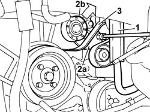
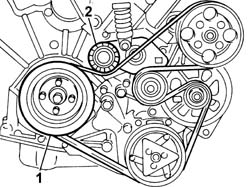
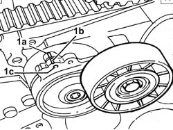
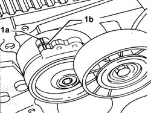
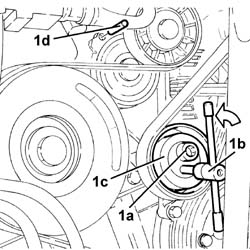
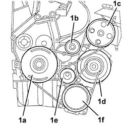
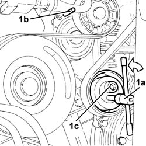
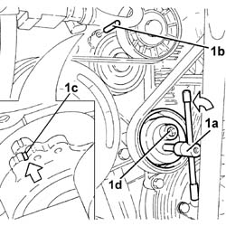
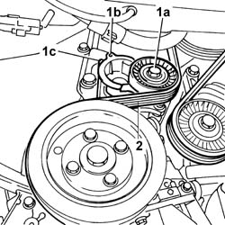

1092G10 SINGLE ENGINE BELT R R
- Path
- Procedures > 10 ENGINE > 1092 ENGINE COMPONENT MISCELLANEOUS DRIVES > 1092G SINGLE DRIVE BELT FOR VARIOUS ENGINE COMPONENTS > 1092G10 SINGLE ENGINE BELT R R
- Kind
- repair procedure (removal / refitting; the operation number is the code)
- Applies to
- all engines; all production periods
- Interactive page
- https://sloeber94.github.io/elrnDB-fUlss/en/#/179007207
Applies to: engines: 3.0 24V V6; all production periods
 Removing
Removing
 Refitting
Refitting- Position the vehicle on the lift.
- Disconnect the negative battery terminal.
Description | Connector | |
|---|---|---|
. | Battery | A001B |
Op. 4450B04 RIGHT FRONT WHEEL R R
Op. 7055B91 RIGHT FRONT WHEEL ARCH LINER - R.R.
Op. 4410D16 BRACKET (ONE) RETAINING CHASSIS TO BODY - R R
1. Move the power steering circuit pipe.
2. Turn lever (2a) clockwise to the end of its travel and raise mobile tensione (2b).
3. Remove the single engine components drive belt.

Applies to: engines: 3.0 24V V6; all production periods
Refitting
Removing- Ensure the tensioners turn freely and no play or binding is present.
- Positiont the drive belt, beginning from the crankshaft pulley (1) and ending with mobile tensioner (2).

Applies to: engines: 3.0 24V V6; all production periods
- Ensure the belt is correctly inserted in the grooves on the pulleys.
- Position the power steering circuit pipe.
Op. 4410D16 BRACKET (ONE) RETAINING CHASSIS TO BODY - R R
Op. 7055B91 RIGHT FRONT WHEEL ARCH LINER - R.R.
Op. 4450B04 RIGHT FRONT WHEEL R R
- Connect the negative battery terminal.
Description | Connector | |
|---|---|---|
. | Battery | A001B |
- Remove the vehicle from the lift.
Applies to: engines: 2.2 16V JTD; all production periods
Removing
Refitting- Position the vehicle on the lift.
Op. 4450B04 RIGHT FRONT WHEEL R R
Op. 7055B91 RIGHT FRONT WHEEL ARCH LINER - R.R.
1. The single belt tensioner is positioned as illustrated in the diagram when the belt is new, in other words when the fixed reference (1a) and the moving reference (1b) are aligned and it is possible to insert a pin in the opening (1c).

Applies to: engines: 2.2 16V JTD; all production periods
1. The single belt tensioner is positioned as illustrated in the diagram when the belt is worn, in other words when the fixed reference (1a) and the moving reference (1b) are aligned on the second moving reference.

Applies to: engines: 2.2 16V JTD; all production periods
- Loosen the bolt (1a) then, using a box wrench (1b), adjust the tensioner (1c) until a 4 mm diameter pin (1d) can be fitted into the reference hole.
- Release and remove the auxiliary shaft drive belt.

Applies to: engines: 2.2 16V JTD; all production periods
Refitting
Removing
Applies to: engines: 2.2 16V JTD; all production periods
1. Fit the drive belt then, using a box wrench (1a) , rotate the tensioner until it is possible to release the 4 mm diameter pin (1b) from the reference opening, then tighten the bolt (1c) to torque.
 | Value - daNm | Fastening | Component | Ø |
|---|---|---|---|---|
. | 4,5 | Bolt | VARIOUS S D BELT CAM TENSIONER | - |

Applies to: engines: 2.2 16V JTD; all production periods
- If the same belt is being fitted and not a replacement belt, carry out the procedure described below.
1. Using a box wrench (1a), rotate the tensioner until the pin (1b) can be released; still using the box wrench, tension the belt until the references in the wear indicator (1c) are aligned, then tighten the bolt (1d) to torque.

Applies to: engines: 2.2 16V JTD; all production periods
Op. 7055B91 RIGHT FRONT WHEEL ARCH LINER - R.R.
Op. 4450B04 RIGHT FRONT WHEEL R R
- Remove the vehicle from the lift.
Applies to: engines: 2.0 16V JTD; all production periods
Removing
Refitting- Position the vehicle on the lift.
Op. 4450B04 RIGHT FRONT WHEEL R R
Op. 7055B91 RIGHT FRONT WHEEL ARCH LINER - R.R.
1. The single belt tensioner is positioned as illustrated in the diagram when the belt is new, in other words when the fixed reference (1a) and the moving reference (1b) are aligned and it is possible to insert a pin in the opening (1c).
Applies to: engines: 2.0 16V JTD; all production periods
1. The single belt tensioner is positioned as illustrated in the diagram when the belt is worn, in other words when the fixed reference (1a) and the moving reference (1b) are aligned on the second moving reference.
Applies to: engines: 2.0 16V JTD; all production periods
1. Loosen the bolt (1a), then use a box wrench (1b) to adjust the tensioner (1c) until a 4 mm diameter pin (1d) can be fitted into the reference hole.
- Release and remove the auxiliary shaft drive belt.
Applies to: engines: 2.0 16V JTD; all production periods
Refitting
Removing1. Fit the single drive belt following the order illustrated; (1a) crankshaft pulley, (1b) tensioner with wear indicator, (1c) power assisted steering pump, (1d) alternator, (1e) cam tensioner, (1f) compressor.
Applies to: engines: 2.0 16V JTD; all production periods
1. Fit the drive belt then, using a box wrench (1a) , rotate the tensioner until it is possible to release the 4 mm diameter pin (1b) from the reference opening, then tighten the bolt (1c) to torque.
| Value - daNm | Fastening | Component | Ø |
|---|---|---|---|---|
1b | 4,5 | Bolt | VARIOUS S D BELT CAM TENSIONER | - |
Applies to: engines: 2.0 16V JTD; all production periods
- If the same belt is being fitted and not a replacement belt, carry out the procedure described below.
1. Using a box wrench (1a), rotate the tensioner until the pin (1b) can be released; still using the box wrench, tension the belt until the references in the wear indicator (1c) are aligned, then tighten the bolt (1d) to torque.
Applies to: engines: 2.0 16V JTD; all production periods
Op. 7055B91 RIGHT FRONT WHEEL ARCH LINER - R.R.
Op. 4450B04 RIGHT FRONT WHEEL R R
- Remove the vehicle from the lift.
Applies to: engines: 2.0 16v; all production periods
Removing
RefittingOp. 4450B04 RIGHT FRONT WHEEL R R
Op. 7055B91 RIGHT FRONT WHEEL ARCH LINER - R.R.
Op. 4410D16 BRACKET (ONE) RETAINING CHASSIS TO BODY - R R
- < R1 > [Right side, front]
1. Adjust the moving tensioner bolt (1a) and turn it in an anti-clockwise direction to align the moving reference (1b) with the fixed reference (1c) and fit the pin.
2. Remove the auxiliary shaft drive belt.

Applies to: engines: 2.0 16v; all production periods
Refitting
Removing- Fit the belt on the various components.
- Remove the pin so that the moving tensioner tensions the belt.
Op. 4410D16 BRACKET (ONE) RETAINING CHASSIS TO BODY - R R
- < R1 > [Right side, front]
Topics linked from this page (3)
- 4410D16 BRACKET (ONE) RETAINING CHASSIS TO BODY - R R
- 4450B04 RIGHT FRONT WHEEL R R
- 7055B91 RIGHT FRONT WHEEL ARCH LINER - R.R.
Topics that link to this page (15)
- 1016C10 SINGLE CYLINDER HEAD - R.R. AND REPLACE GASKET
- 1016B10 SINGLE CAMSHAFT HOUSING - REPLACE GASKET
- 1020A20 CRANKCASE OIL SUMP - R.R CLEAN SURFACES FOR SEALANT APPLICATION
- 1024F30 ENGINE BALANCING SHAFTS - R.R.
- 1028H10 PISTON WITH CONNECTING ROD - R R
- 1032B10 TOOTHED TIMING BELT - R + R FOR TIMING ADJUSTMENT OR REPLACEMENT
- 1032B46 TOOTHED DRIVE PULLEY - R + R
- 1032B52 TOOTHED DRIVEN PULLEY (ONE) - R + R
- 1036C10 CAMSHAFTS IN CAMSHAFT HOUSING - R.R - INCLUDES CAMSHAFT HOUSING REPLACEMENT, IF NECESSARY
- 1036C39 TIMING VARIATOR ON CYLINDER HEAD INTAKE CAMSHAFT - R R
- 1036G10 CAMSHAFT CONTROLLING VALVES IN LEFT CAMSHAFT HOUSING - R.R. - INCLUDES REPLACEMENT OF CAMSHAFT HOUSING, IF NECESSARY
- 1092A10 CRANKSHAFT PULLEY - R + R
- 4130B20 POWER STEERING PUMP - R.R.
- 5040A20 AIR CONDITIONER COMPRESSOR - R+R - INCLUDES FLUID LEVEL CHECK AND TOP UP IF NECESSARY
- 5530A10 ALTERNATOR - R+R